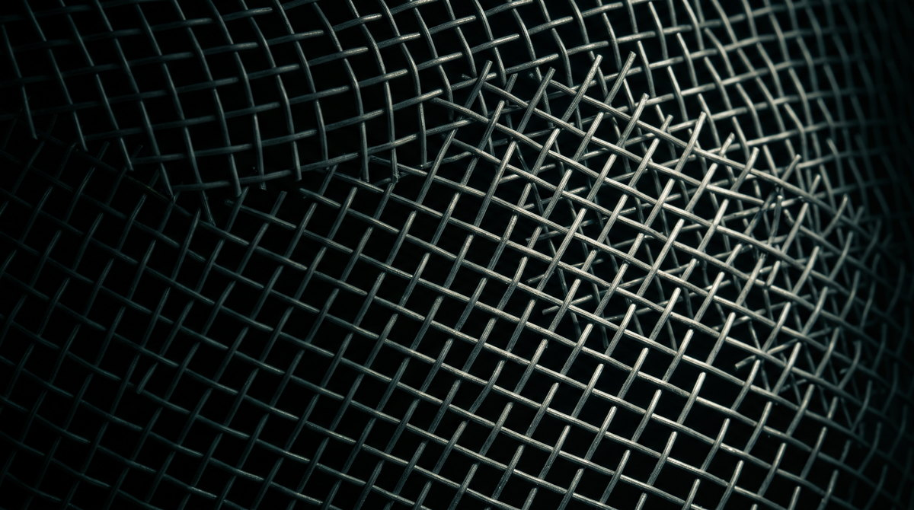

Processo penal
O que reabre um inquérito arquivado?
Só prova nova reabre – é assim desde 1941. O que mudou foi quem segura a peneira, e isso o STF só assentou em 2023.
24 de agosto de 2026Bruno Hardt

O inquérito estava arquivado havia seis meses. Apurava uma contravenção – vias de fato –, o Ministério Público não encontrou prova de autoria nem de materialidade, pediu o arquivamento, e o juiz o determinou. Então a pessoa apontada como vítima constituiu advogado e peticionou nos mesmos autos, pedindo a reabertura. O Ministério Público concordou e requereu audiência para propor transação penal ao investigado; o juiz a designou.
Em nenhuma dessas peças – a petição, o parecer, a decisão – havia uma prova que não estivesse nos autos desde o começo.
O caso passou pela minha mesa no núcleo de prática jurídica da faculdade, em um habeas corpus. A pergunta que ele faz, porém, é geral: arquivado um inquérito, o que é capaz de reabri-lo? A resposta está no mesmo lugar desde 1941 – com um detalhe que mudou no caminho, e sobre o qual quase nada se escreveu ainda.
Duas peneiras, não uma
O art. 18 do Código de Processo Penal autoriza a autoridade policial a voltar a investigar depois do arquivamento “se de outras provas tiver notícia”. E a Súmula 524 do STF fecha a outra porta:
Enunciado
Arquivado o inquérito policial, por despacho do juiz, a requerimento do promotor de justiça, não pode a ação penal ser iniciada, sem novas provas. (SÚMULA 524, TRIBUNAL PLENO, julgado em 03/12/1969, DJ 10/12/1969, p. 5933)
São duas peneiras, não uma. Para reabrir a investigação, basta a notícia de prova nova; para oferecer denúncia, é preciso que a prova nova exista. Quem separou as duas com todas as letras foi o Superior Tribunal de Justiça, num caso em que a investigação renasceu – sob outro rótulo – das mesmas peças que já tinham levado ao arquivamento:
Ementa
PROCESSUAL PENAL. RECURSO ORDINÁRIO EM HABEAS CORPUS. INQUÉRITO POLICIAL. PEDIDO DO MINISTÉRIO PÚBLICO. ARQUIVAMENTO DETERMINADO. POSSIBILIDADE DE DESARQUIVAMENTO DO INQUÉRITO. CPP ART. 18. NOTÍCIAS DE NOVAS PROVAS. INVESTIGAÇÃO REABERTA COM BASE NOS MESMAS PEÇAS INFORMATIVAS. IMPOSSIBILDADE. BIS IN IDEM. RECURSO PROVIDO. […] II - Para o caso de reabertura das investigações policiais, o art. 18 do Código de Processo Penal prevê que "Depois de ordenado o arquivamento do inquérito pela autoridade judiciária, por falta de base para a denúncia, a autoridade policial poderá proceder a novas pesquisas, se de outras provas tiver notícia". Por sua vez, a Súmula 524/STF condiciona o oferecimento da denúncia à efetiva existência de nova prova. […] VI - Em síntese, o art. 18 do CPP exige notícia de prova nova. A Súmula 524/STF exige fato novo (prova nova). Esta, para fins de oferecimento da denúncia, aquela, para fins de investigação policial. Todavia, a nova qualificação dos fatos não se presta para nenhuma das duas situações. Nesse sentido: “não constitui fato ensejador da denúncia, após o arquivamento, a mera qualificação diversa do crime, que permanece essencialmente o mesmo” (RHC 3.111/RJ, Quinta Turma, Rel. Min. Assis Toledo, DJ de 28/2/1994). Daí, mutatis mutandis no art. 18 do CPP. Doutrina. Recurso ordinário provido, para, concedendo a ordem, determinar o trancamento do segundo inquérito policial instaurado contra o ora recorrente, ressalvada a possibilidade de reabertura das investigações, na hipótese da existência de notícias de novas provas, ou, por mais razão, novas provas.
Prova nova, nesse desenho, é a que altera o panorama probatório dentro do qual o arquivamento foi pedido e acolhido. Não é papel novo: é fato novo, ou fonte nova sobre os mesmos fatos, que permita à acusação enxergar o que antes não podia.
O que não passa pela malha
A régua barra quase tudo o que, na prática, motiva pedidos de reabertura. A petição de quem se diz vítima não é prova nova – é inconformismo, e o inconformismo os autos já conheciam. A requalificação jurídica não é prova nova: o fato que “permanece essencialmente o mesmo” não vira outro por trocar de nome, diz o mesmo julgado. E a releitura das peças antigas, por mais atenta, tampouco – se bastasse reler com outros olhos, o arquivamento não seguraria nada.
Foi essa a discussão do habeas corpus lá do início. E o tribunal catarinense já tinha dado a resposta, em caso de inquérito reaberto e denúncia oferecida sem nenhum elemento novo:
Ementa
HABEAS CORPUS. CRIME CONTRA O PATRIMÔNIO. ESTELIONATO. PLEITO DE TRANCAMENTO DA AÇÃO PENAL, AO ARGUMENTO DE QUE O INQUÉRITO POLICIAL NÃO PODERIA TER SIDO DESARQUIVADO E A AÇÃO PENAL INICIADA SEM A EXISTÊNCIA DE NOVAS PROVAS. CABIMENTO. INQUÉRITO POLICIAL ANTERIORMENTE ARQUIVADO POR ATIPICIDADE DA CONDUTA. AUSÊNCIA DE NOVOS ELEMENTOS PROBATÓRIOS APTOS A JUSTIFICAR O INÍCIO DA AÇÃO PENAL. CONTRARIEDADE AO ART. 18 DO CPP E À SÚMULA 524 DO STF. CONSTRANGIMENTO ILEGAL EVIDENCIADO. PRECEDENTES. ORDEM CONCEDIDA. Após o arquivamento do inquérito policial, por ordem da autoridade judiciária e a requerimento do Ministério Público, a retomada da persecução estatal, seja pelo desarquivamento do inquérito policial, seja pelo oferecimento de denúncia, fica condicionada à existência de outras provas (RHC 41.933/SP, rel. Min. Felix Fischer, 5ª Turma, j. 11-6-2015). - É inviável a reabertura do inquérito e o oferecimento de denúncia diante da ausência de prova nova após seu arquivamento. [...] - Ordem concedida. (Habeas Corpus n. 2014.048566-5, de Joinville, rel. Des. Carlos Alberto Civinski, j. 2-9-2014). (TJSC, Habeas Corpus n. 4001106-27.2016.8.24.0000, de São José, rel. Rui Fortes, Terceira Câmara Criminal, j. 24-05-2016).
Repare num detalhe da ementa: ali o arquivamento tinha sido por atipicidade da conduta. É um limite anterior à peneira, que convém não confundir – a exigência de prova nova vale para o arquivamento por falta de provas; quando se arquiva por atipicidade do fato, há coisa julgada material, e nem prova nova reabre coisa alguma. A câmara nem precisou dessa porta: para conceder a ordem, bastou a ausência de elemento novo. Sobre o arquivamento fundado em excludente de ilicitude, STJ e STF divergem – assunto para outro escrito.
A porteira mudou de dono
Tudo acima pressupõe uma cena: o promotor requer, o juiz despacha o arquivamento. O art. 18 fala em arquivamento ordenado “pela autoridade judiciária”; a Súmula 524, em “despacho do juiz, a requerimento do promotor”. Era assim desde 1941.
A Lei 13.964/2019 – o pacote anticrime – desmontou a cena. Na redação nova do art. 28, quem ordena o arquivamento é o próprio Ministério Público, que comunica a vítima, o investigado e a autoridade policial e encaminha os autos à sua instância interna de revisão. O juiz saiu do rito, e a súmula ficou falando de um despacho que não existe mais. Por quase quatro anos, nem se soube qual das cenas valia: uma decisão cautelar suspendeu a eficácia do dispositivo assim que ele nasceu, e o mérito só foi julgado em 24 de agosto de 2023. O resultado está nos itens 20 e 21 do dispositivo do julgamento conjunto:
Consulta à fonte oficial
20. atribuir interpretação conforme ao caput do art. 28 do CPP, alterado pela Lei nº 13.964/2019, para assentar que, ao se manifestar pelo arquivamento do inquérito policial ou de quaisquer elementos informativos da mesma natureza, o órgão do Ministério Público submeterá sua manifestação ao juiz competente e comunicará à vítima, ao investigado e à autoridade policial, podendo encaminhar os autos para o Procurador-Geral ou para a instância de revisão ministerial, quando houver, para fins de homologação, na forma da lei, vencido, em parte, o Ministro Alexandre de Moraes, que incluía a revisão automática em outras hipóteses; 21. atribuir interpretação conforme ao § 1º do art. 28 do CPP, incluído pela Lei nº 13.964/2019, para assentar que, além da vítima ou de seu representante legal, a autoridade judicial competente também poderá submeter a matéria à revisão da instância competente do órgão ministerial, caso verifique patente ilegalidade ou teratologia no ato do arquivamento
O juiz voltou ao circuito, mas não como dono da porteira. Recebe a manifestação de arquivamento e só provoca a revisão dentro do Ministério Público se enxergar nela “patente ilegalidade ou teratologia”. A vítima ganhou via própria: trinta dias para pedir essa mesma revisão. E a exigência de prova nova? Ninguém a revogou. O art. 18 continua em vigor, a Súmula 524 nunca foi cancelada nem revista, e os tribunais seguem exigindo prova nova para reabrir o que foi arquivado. O que mudou foi quem aplica o filtro na primeira passada: o próprio Ministério Público, dentro de casa, com o juiz de guarda na borda.
O que ainda não existe, convém dizer com todas as letras: até a data desta publicação, não encontrei julgado do STF ou do STJ relendo a Súmula 524 à luz do rito novo – dizendo, por exemplo, o que acontece quando a instância de revisão reabre sem prova nova e o juiz não vê nisso teratologia. Esse julgado ainda não foi escrito. Quando for, este texto se atualiza.
A primeira pergunta
Para quem é investigado, tudo isso vira uma pergunta só. Se um inquérito arquivado voltou a andar – intimação nova, audiência marcada, denúncia recebida –, a primeira coisa a procurar nos autos é a prova nova: qual é, em que folha está, e o que ela acrescenta ao quadro que o arquivamento já tinha diante de si. Se a resposta for “o mesmo de antes, com outra capa”, o constrangimento é ilegal, e o remédio existe desde sempre: o habeas corpus tranca a investigação reaberta, ressalvado o dia em que prova nova de verdade aparecer.
A malha é apertada por desenho. O que ela deixa passar é pouco – e é para ser.